Declaro inaugurado este proceso,
yo soy eso más allá de mi seso,
más allá de mis huesos, y del
espeso espejo. Me expreso, ex-preso
del dolor de mi sombra escupí sangre.
Hoy escribo lo que siento,
para quitarme el hambre,
más allá de mis huesos, me veo en el
espeso espejo. Me expreso, ex-preso del dolor,
de mi sombra, escupí sangre.
Hoy escribo lo que siento, para quitarme el hambre,
para saciar la sed de ser lo que soy
y no lo que debería, te amo más allá de mi histeria.
Mi historia es parte del misterio,
la música es un trabajo serio,
se lo dije a tu padre, pero el se rió.
Gorriones comen de mi lengua, no hay quien me detenga
de frente a lo que venga, ya me quité la venda
mi sueño no está en venta.
Ven también traigo menta, hecha palabras para abrazar.
¿Te acuerdas cómo es que nos conocimos?,
una mirada bastó para incendiarnos sobre el pasto.
Mil988 es un duo de música, visuales e improvisación
nacido por el Metro Balderas en la Ciudad de México,
e intercambiando material a través de la web desde Montréal
creado por Arturo I. Waldo y Rodrigo Velasco en 2016.
En Mil988 Arturo y Rodrigo crean música utilizando el lenguaje.
Música rap que involucra un proceso artesanal - algorítmico
- electrónico, para componer e improvisar a través de
live coding, guitarra, potenciometros, faders y voz.
/ e-mail
/ twittear / fakebook /
Mil988 is a music, visuals and improvisation duo
born close of Metro Balderas in Mexico City,
and exchanging stuff through the web from Montréal
created by Arturo I. Waldo and Rodrigo Velasco in 2016.
In Mil988 Arturo and Rodrigo create music through language.
Rap music involving a craft - algorithmic - electronic
process for compose and improvise through
live coding, guitar, accelerometer, faders and voice.
I declare inaugurated this process,
I am that beyond my brain, beyond my bones,
express from the pain of my shadow I spat blood
Today I write what I feel, to take away my hunger,
to quench the thirst to be what I am and not what I should,
I love you beyond my hysteria.
My story is part of the mystery, music is a serious job,
express from the pain of my shadow I spat blood
Today I write what I feel, to take away my hunger,
to quench the thirst to be what I am and not what I should,
I love you beyond my hysteria.
My story is part of the mystery, music is a serious job
I told your father, but he laughed.
Sparrows eat from my tongue, there is no
there is no one to stop me in front of whatever comes,
I took off the band my dream is not for sale.
Come, also I bring mint, made words to embrace
Do you remember how we met?
A glance was enough to fire us on the grass.
